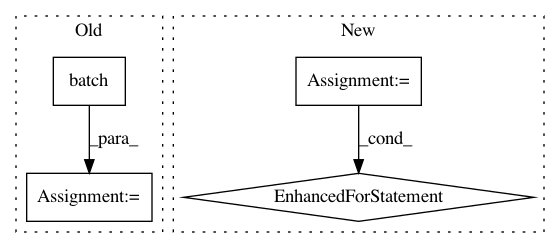

11e9c7adfbf7d50dd9ef4442cf7806cdb2ee2368,samples/core/get_started/custom_estimator.py,,main,#Any#,105
Before Change
classifier.train(input_fn=from_dataset(train), steps=args.train_steps)
// Evaluate the model.
test = make_dataset(test_x, test_y).batch(args.batch_size)
eval_result = classifier.evaluate(input_fn=from_dataset(test))
print("\nTest set accuracy: {accuracy:0.3f}\n".format(**eval_result))
// Generate predictions from the model
predict_input = make_dataset({
After Change
// Feature columns describe how to use the input.
my_feature_columns = []
for key in train_x.keys():
my_feature_columns.append(tf.feature_column.numeric_column(key=key))
// Build 2 hidden layer DNN with 10, 10 units respectively.
classifier = tf.estimator.Estimator(
model_fn=my_model,
params={
"feature_columns": my_feature_columns,
In pattern: SUPERPATTERN
Frequency: 5
Non-data size: 4
Instances
Project Name: tensorflow/models
Commit Name: 11e9c7adfbf7d50dd9ef4442cf7806cdb2ee2368
Time: 2017-11-17
Author: markdaoust@google.com
File Name: samples/core/get_started/custom_estimator.py
Class Name:
Method Name: main
Project Name: yahoo/TensorFlowOnSpark
Commit Name: 981e4266d4ea816b08a762193bd52f40cd1a3242
Time: 2019-08-07
Author: leewyang@verizonmedia.com
File Name: examples/mnist/keras/mnist_inference.py
Class Name:
Method Name: inference
Project Name: keras-team/autokeras
Commit Name: e87e84a21e0dfc1258b2f868532b03fabfd66a85
Time: 2020-06-01
Author: jhfjhfj1@gmail.com
File Name: autokeras/auto_model.py
Class Name: AutoModel
Method Name: fit
Project Name: tensorflow/models
Commit Name: 11e9c7adfbf7d50dd9ef4442cf7806cdb2ee2368
Time: 2017-11-17
Author: markdaoust@google.com
File Name: samples/core/get_started/premade_estimator.py
Class Name:
Method Name: main